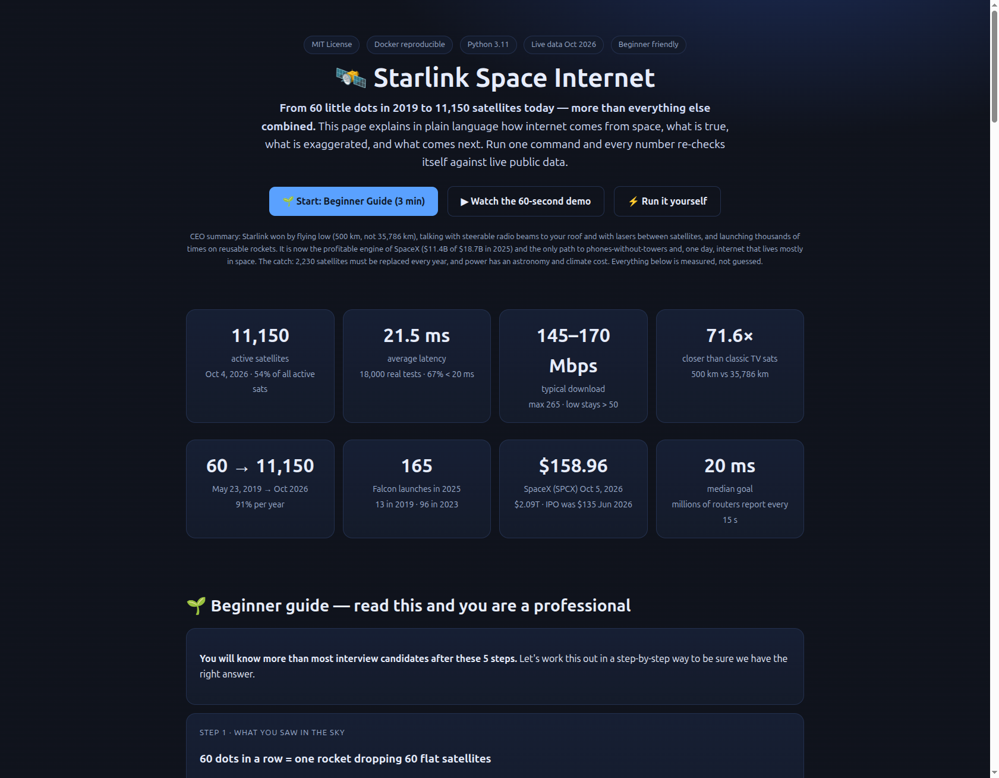
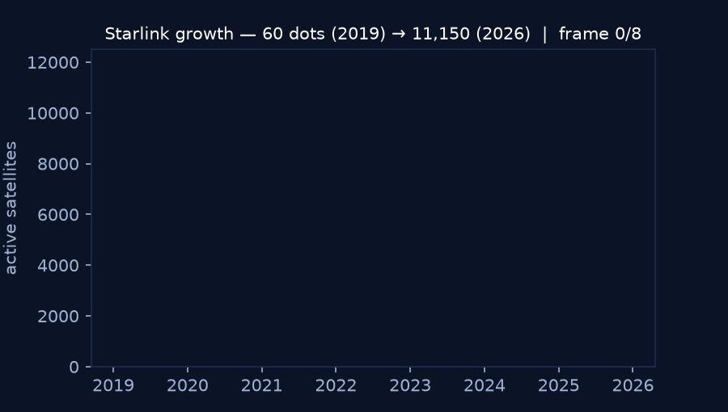

From 60 little dots in 2019 to 11,150 satellites today — more than everything else combined. This page explains in plain language how internet comes from space, what is true, what is exaggerated, and what comes next. Run one command and every number re-checks itself against live public data.
🌱 Start: Beginner Guide (3 min) ▶ Watch the 60-second demo ⚡ Run it yourself
CEO summary: Starlink won by flying low (500 km, not 35,786 km), talking with steerable radio beams to your roof and with lasers between satellites, and launching thousands of times on reusable rockets. It is now the profitable engine of SpaceX ($11.4B of $18.7B in 2025) and the only path to phones-without-towers and, one day, internet that lives mostly in space. The catch: 2,230 satellites must be replaced every year, and power has an astronomy and climate cost. Everything below is measured, not guessed.
You will know more than most interview candidates after these 5 steps. Let's work this out in a step-by-step way to be sure we have the right answer.
On May 23, 2019 at 22:30 a Falcon 9 left Florida with 60 satellites stacked like cards (227 kg each). They were released at 440 km and climbed with ion engines to ~550 km. For a few nights they reflected the sun in a perfect train. Not aliens — a factory in orbit being switched on.
1) Your dish (Dishy). Flat, ~1,000+ tiny antennas acting as one steerable beam (phased array). It points with electricity, not motors, and follows a satellite crossing the sky in ~5 minutes.
2) The satellite. Listens with radio, forwards with radio to gateways, or with laser to the next satellite when the ocean blocks the view (Earth curves — at 500 km you cannot see your dish and a far gateway at once).
3) The gateway. About 100+ sites in the US (1,500+ antennas) and 150–200 worldwide. Dishes under white balls near big data centers. Your request goes up, down to the gateway, into normal internet, and back the same way — in milliseconds.
Radio and laser both travel at light speed. Old TV sats sit at 35,786 km: one-way 119 ms, round-trip 239 ms + computers = awkward TV-delay. Starlink at 500 km: one-way 1.7 ms, round-trip 3.3 ms. That is 71.6× closer. Vacuum is also ~30–47% faster than glass fiber (glass slows light, index 1.47). Result: New York → London by laser in space 18.6 ms vs 30.6 ms by undersea cable route. Gamers can finally play.
A low satellite circles in ~95 minutes and is visible ~5 minutes. To always have one above you, anywhere on Earth, you need thousands. Three high sats cover the planet (minus poles). Thousands of low sats cover it fast. That is why reusable rockets matter: 13 launches (2019) → 96 (2023) → 165 (2025). Each Falcon carries 60 small v1 or ~20 bigger V2. Future giant rocket carries 60 big V3 at once (~61 Terabits in one launch).
Newer satellites carry extra-powerful antennas to hear whisper-weak phones. Texting from dead zones is live (US/New Zealand, 400+ sats, approved Nov 2024, millions of emergency texts during hurricanes/fires). Voice and full data need bigger V3 sats. Undersea cables still carry ~100× more total data than Starlink — Starlink wins on reach + delay, not total volume. The filed future: up to 42,000 approved-filed sats, Starship launches, and a separate 1-million-satellite AI file (filed, not approved). Moon factories and railguns are stories, not plans.
What you see: one command re-runs all 6 checks and prints PASS/FAIL with real numbers. No key needed. Offline it uses pinned Oct 2026 values (clearly labeled).
pip install -r requirements.txt python benchmarks/run_benchmarks.py # or docker compose up --build


Video: record your run with any screen recorder, save as docs/demo.mp4, and link it here + in README. Keep under 60 s: install → run → show 21.5 ms + 11,150 + $158.96.
23 claims labeled: confirmed, simplified, optimistic, speculative, fiction. You never guess which part of the story to trust.
Active count vote (11,150 / 11,149 / 11,122 / 11,080), shells, launched total 12,988. See concentration: 54% by one operator.
GEO vs LEO delay, fiber vs vacuum, orbit period, pass time. Type an altitude, get delay. Interview-ready.
IPO $135 → $158.96 live ($2.09T), Starlink 61% of revenue and profitable while rockets lose money. Partners: phones + cloud.
What text-from-nowhere can do today vs voice/data tomorrow, frequencies, approval dates.
5 hidden patterns with data + code + questions: replacement treadmill, shell shift, profit flip, power-tax, bottleneck.
| You are… | Do this | You get |
|---|---|---|
| Student / curious | Read Beginner Guide + run Exp 02 | Explain any satellite internet in 3 minutes with numbers. |
| Teacher | Show Demo + stats band in class | One slide: why low beats high, with live proof. |
| Interview candidate | Learn GEO 238 ms vs LEO 3.7 ms + vacuum 47% | Answer latency, phased array, ISL trade-offs cold. |
| Rural / traveler | Check gateway + latency + D2C sections | Know when satellite beats no-signal vs fiber. |
| Investor / founder | Read market + replacement sections | Why bandwidth funds rockets; why launch rate is survival. |
| Researcher (PhD) | Open papers/PAPER.md + H1–H5 | Publishable question + data + baseline in a day. |
| Source | Count | Note |
|---|---|---|
| Live trackers Oct 4–5 | 11,150 / 11,149 / 11,122 | Active; spread 6.7% = counting method |
| Launched all-time | ~12,988 | Rest re-entered / deorbiting (210) / raising (893) |
| Shells | 5,072 @53°/550km · 3,616 @43°/480km | New low shell = 32%, the growth vector |
| Share of sky | ~54% | More than all others combined (9,498) |
| Path | Delay | What it means |
|---|---|---|
| LEO 500 km up+down | 3.3 ms | Talk feels instant |
| GEO 35,786 km up+down | 238.7 ms | Awkward TV pause |
| Real Starlink (18k tests) | 21.5 ms avg 67% <20 · 96% <30 | Good for calls + games (needs <50) |
| NY→London laser in space | 18.6 ms | Beats cable route 30.6 ms |
| Fact | Number |
|---|---|
| First launch | May 23, 2019 22:30, 60×227 kg, 440→550 km |
| Starlink 2025 | $11.4B = 61% of $18.7B, +50%, profitable |
| SpaceX live | $158.96 (+7.35%) = $2.09T · IPO $135 Jun 2026 |
| Launches | 13 → 96 → 165 per year; 60 v1 / 20 V2 per Falcon; 60 V3 per giant rocket (~61 Tb) |
| Gateways / cloud | 100+ US sites, 1,500+ antennas, 150–200 world; ground stations inside data centers |
| Phones | Text live Feb 2025 (400+ sats); voice/data planned |
| Claim | Verdict |
|---|---|
| 60 sats May 23, 2019 | CONFIRMED |
| 11,150 > all others combined | CONFIRMED |
| Helped Ukraine / disasters / Iran | CONFIRMED direction |
| Most valuable listed company | TRUE after Jun 2026 IPO (was private before) |
| Flat dish follows sats with no motor | CONFIRMED |
| “5+3 antennas” exact numbers | Illustrative (exact counts not public) |
| 100+ US gateways, 9 dishes/site | CONFIRMED range |
| $900M + data-center stations | CONFIRMED (story missed “M”) |
| Laser hops over oceans | CONFIRMED |
| Radio = light; laser carries more | CONFIRMED |
| Clouds block laser, not radio; sun is white | CONFIRMED |
| 70× closer · 95-min orbit · 5-min pass | CONFIRMED (71.6×) |
| Space laser 30%+ faster than fiber | CONFIRMED (conservative) |
| Reusable rockets make it affordable | CONFIRMED |
| Giant rocket 200 t, 60 big sats | Optimistic (100–150 t today) |
| Phones: text now, broadband later | ESSENTIALLY CORRECT |
| 100k sats / no gateways / internet in space | Vision, not approved |
| 1M AI sats above (Starmind) | Filed, not approved |
| Moon factory + railgun | Story, not a plan |
Full 25-row evidence table: data/claims_matrix.csv · Re-run: python benchmarks/run_benchmarks.py
5-year life × 11,150 = ~2,230 must be replaced yearly (~97 rocket launches just to stand still). Growth + replacement = why 165 launches happened. Giant rockets are survival, not luxury.
Main shell 550 → 480 km. New 43° shell already 32%. Slightly faster + safer, but more air drag = more replacements. Watch that shell.
Internet service is profitable; rockets as a group still lose money. The “rocket company” is now a bandwidth company that builds rockets.
Phone-capable sats leak 32× more radio noise (hurts astronomy) and each subscriber costs 6–8× more CO₂ than 4G. Power ≠ free.
git clone https://github.com/M0-AR/starlink-space-internet.git cd starlink-space-internet pip install -r requirements.txt python benchmarks/run_benchmarks.py # Docker (same result everywhere): docker compose up --build
Live site for this repo: after enabling Pages (below), open https://M0-AR.github.io/starlink-space-internet/ — it is this file (docs/index.html).
1) On GitHub open your repo → Settings → Pages → Deploy from a branch → Branch main + folder /docs → Save.
2) Wait ~1 min → open the green Pages URL.
3) Every push to main rebuilds it. Custom domain + HTTPS are in the same Pages panel.
| Folder | Open it for… |
|---|---|
experiments/ | 6 small scripts: growth, physics, chain, market, phones/future, live check. Read them top to bottom. |
benchmarks/ | One gate that runs everything and writes results JSON. |
data/claims_matrix.csv | 25 claims with verdict + evidence (spreadsheet-friendly). |
papers/PAPER.md | Journal-style draft (intro → method → results → hidden → refs). |
docs/ | Live site (index.html) + screenshots + demo. |